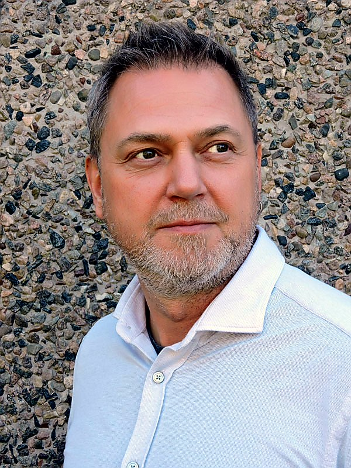

Jag började min Internetbana som webbdesigner 1998 efter att ha pluggat Grafisk design och webbprogrammering efterföljt av avancerad programmering. Jag har uteslutande varit anställd på företag som haft annan kärnverksamhet än IT vilket inneburit att jag haft en konsult liknande, alternativt projektledande roll inom webbutveckling med helhetsansvar från behovsanalys med funktionsbeskrivning tillsammans med kunden ända fram till sjösättning och drift. Däremellan har det varit en hel del "Hands-on". Det har varit en väldigt rolig och spännande resa som har gett mig en väldig bredd på mina kunskaper och nu har jag sytt ihop säcken och arbetar som frilansande konsult inom webb-projektledning. Tveka inte att höra av er om du har funderingar på hur ditt företag kan förbättra sina IT-System, Webb, Intranät. Med Vänlig Hälsning / Kim
